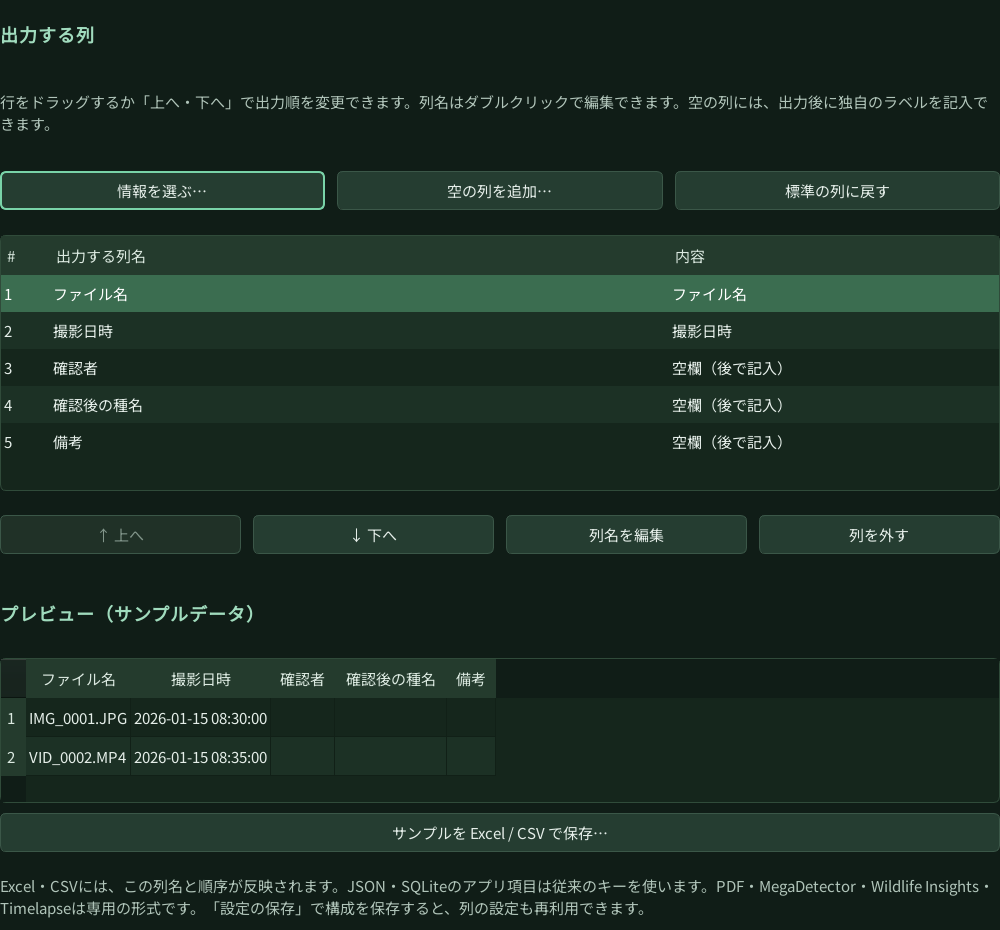

現在のリリースノート
更新方法、変更点、プラットフォームごとの情報を日本語・英語で掲載しています。
Windows 2.2.5 → Mac 2.2.5 →Guide · Windows 2.2.5 / Mac 2.2.5
はじめて使う方のためのガイドです。少量のサンプルで設定と出力を確認してから、本番の解析に進んでください。
Quick start
最新版をインストールし、ライセンスまたはトライアルの状態を確認。必要な検出・分類モデルを準備します。モデルの入手には通信が必要な場合があります。
画像・動画を入力フォルダにまとめ、結果の出力先を指定します。初回は元データをコピーして評価し、出力先に十分な空き容量を確保してください。
動物・人・車両などの対象、信頼度のしきい値、動画のフレーム間隔を設定。種分類を使う場合は、対応するモデルとライセンスを確認します。
完了したファイルと失敗したファイルを確認します。再開・再試行の機能を使い、エラーが残っていないかログを確認してください。
結果をフィルターで絞り込み、必要に応じて元の画像・動画を確認します。誤った分類ラベルを修正し、確認の履歴を残します。
CSV・Excel・JSON・SQLiteなど必要な形式で出力。ProではPDFや対応する外部ツール向け形式も選べます。確認済みの結果と元データを保管してください。
Output profiles · 2.2.5
CSV・Excelの列名、並び順、後で記入する空欄を、調査の様式に合わせて設定できます。Windows・Macともにご利用いただけます。
「出力設定」でExcel・CSVを選び、「情報を選ぶ…」からファイル名、撮影日時、検出結果などを追加します。検索で必要な項目を探せます。
行をドラッグするか「上へ・下へ」で並べ替えます。列名はダブルクリック、または「列名を編集」で変更できます。「列を外す」で不要な項目を外せます。
「空の列を追加…」で「確認者」「確認後の種名」「行動メモ」などを作成します。出力された行ではその列は空欄になり、Excelなどで記入できます。プレビューと「サンプルを Excel / CSV で保存…」で構成を確認してください。サンプルは解析結果ではありません。
「設定の保存」で構成に名前を付けて保存します。出力形式・選択した列・並び順・変更した列名・空の列が保存され、読込み時に復元されます。起動時に自動で読み込む設定や、同じプロファイルを使ったCLI処理にも対応します。

この列名・順序はCSV・Excelに反映されます。JSON・SQLiteの標準項目は従来のキーを使い、PDF・外部ツール向け形式は専用の構成を維持します。
Reference
現在の操作・更新情報は、このガイドと各プラットフォームのリリースノートをご確認ください。
更新方法、変更点、プラットフォームごとの情報を日本語・英語で掲載しています。
Windows 2.2.5 → Mac 2.2.5 →過去バージョンの参考資料（PDF）です。現行版と画面・機能・配布条件が異なる場合があります。
参考PDFを開く →Reference document for an earlier version (Word). For current installation and update information, use the bilingual release notes for Windows 2.2.5 or Mac 2.2.5.
Open reference DOCX →